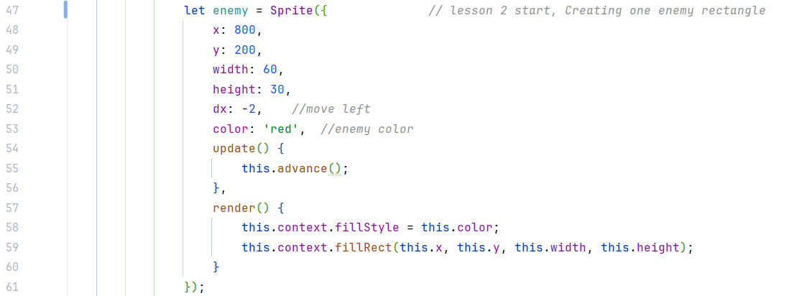

🯠Goal
By the end of this lesson, you’ll be able to:
- Create enemy sprites that move across the screen.
- Spawn multiple enemies at random speeds and positions.
- Detect collisions between the player and enemies.
Target: 6th graders (no coding experience)
Tech: HTML + Kontra.js
Step 1: Create One Enemy Rectangle
We’ll start with just one enemy fish — a red rectangle that moves across the screen.
✅ Code Reference
Add this code after your arrow key movement:
👉 View Step 1 Code This red rectangle acts as the bad fish. It starts on the right side (x: 800) and slowly moves left
because of dx: -2. The update() function keeps it moving, and render()
draws it.

Step 2: Make Enemy Speed Random
“We don’t want every enemy to move the same way. Let’s use random numbers to make them different.”
Use Math.random() to give each enemy a random height and speed.
Step 3: Remove Enemy When Offscreen
We don’t want enemies to exist forever. When they leave the screen, we clean them up.
Add this inside the enemy’s update() function:
We use ttl = 0 (time-to-live) to delete enemies that have moved off-screen. This keeps
the game running smoothly and avoids memory buildup.
Step 4: Prepare an Enemy List (Array)
We want multiple enemies! Create a list to track them all:
let enemies = [];Update your game loop’s update() and render() to handle all enemies in this
list.
Step 5.1: Create a Spawn Timer
We don’t want all enemies at once! Let’s use a timer to spawn new enemies every second.
Add a variable like let spawnTimer = 60; before your GameLoop, and count it down each
frame.
Step 5.2: Spawning New Enemies
Inside your update() function, check the timer and create a new enemy when it reaches 0.
Each new enemy gets a random height and speed and is pushed into the enemies array.
Step 6.1: Add Collision Detection
Now let’s check if the player touches an enemy. If they collide, the enemy changes color.
👉 View Step 6.1 CodeStep 6.2: Checking Collision and Changing Color
Inside your update(), after spawning enemies, loop through all enemies to check
collisions.
🏁 Final Result
- You can see your player fish swimming while new red enemy fish keep appearing and moving. When they bump into each other, the enemies change color — showing your collision detection works